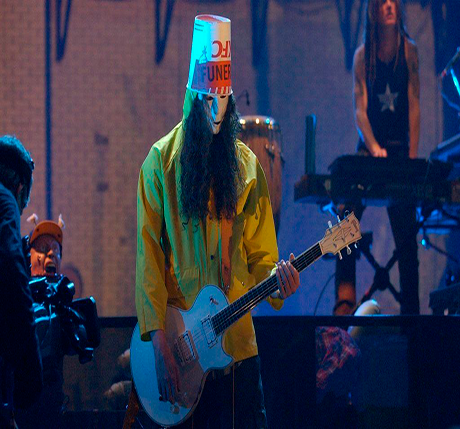

Uma Historia Guns N' Roses
Uma Historia Guns N' Roses Formação longa e confusa com tantos problemas e dilemas, entre 2000 e 2016 a banda passou por mudanças constantes de integrantes, a maioria indo e vindo, ou as vezes indo e nem voltavam, com excecão de Axl Rose e Dizzy Reed que nunca sairam da banda, vale a pena lembrar que durante a turne de lançamento do Chinese Democracy, Izzy Stradlin fez algumas participações especiais, mas nunca de fato retornou para a banda.
Todos os integrantes dessa epoca foram Axl Roses, Buckethead, Dj Ashba, Robin Finck Josh Freese, Dizzy Reed, Paul Tobias, Tommy Stinson, Chris Pitman, Brain Mantia, Richard Fortus, Ron “Bumblefoot” Thal e Frank Ferrer a maioria desses musicos não ficavam muito tempo na banda e muitas das vezes saiam por algum tempo e posteriormente retornavam, no meio dessa gigante confusão o tao aguardado Chinese democracy finalmente saiu, todos os musicos chegaram a gravar para o album mas nem todos foram creditados, Brian May , gravou solos para o album, mas no final das contas, suas partes foram regravadas e excluidas da versão final do Chinese Democracyesse que até então é o ultimo album de estudio lançado pela banda.
